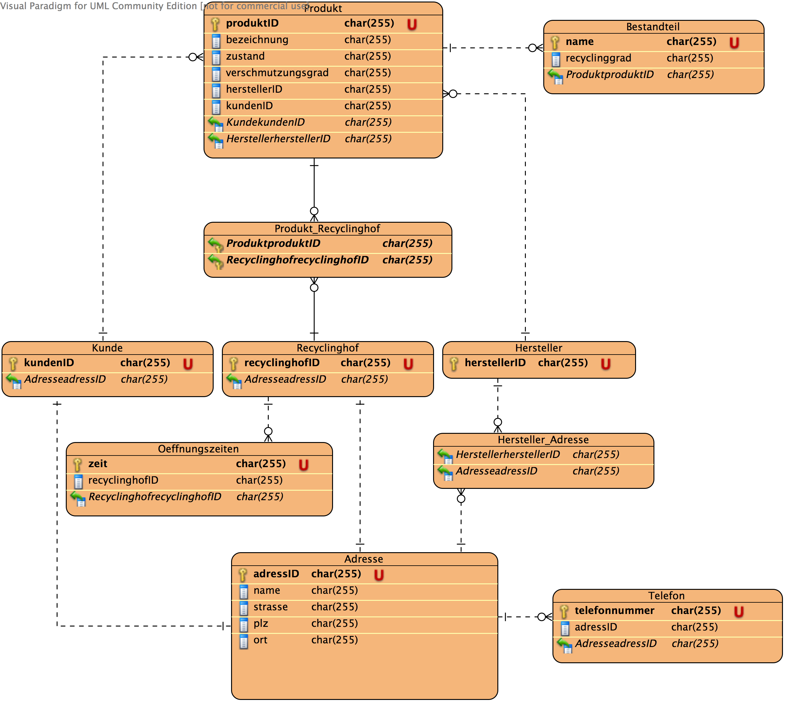
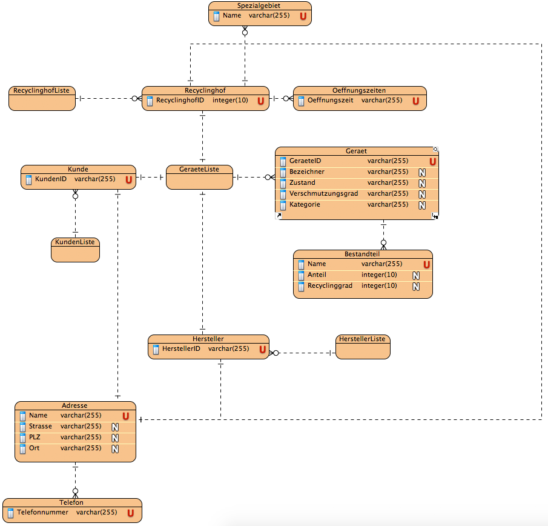
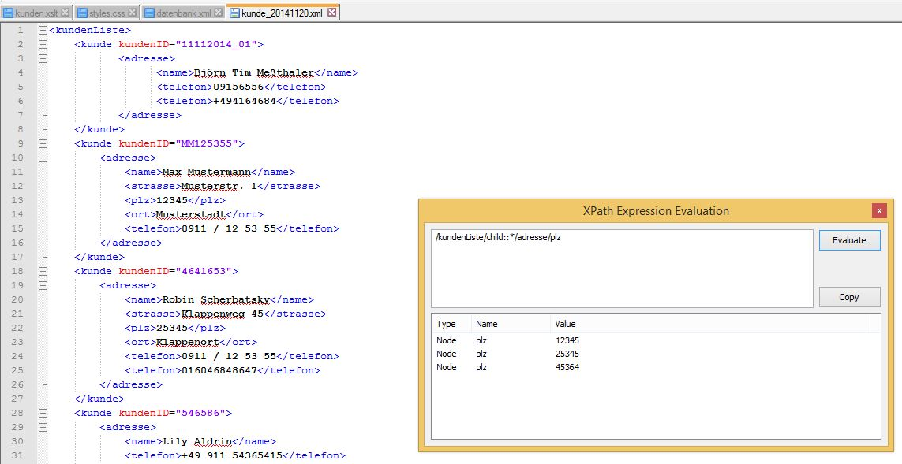
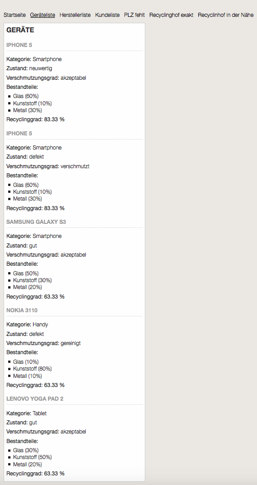
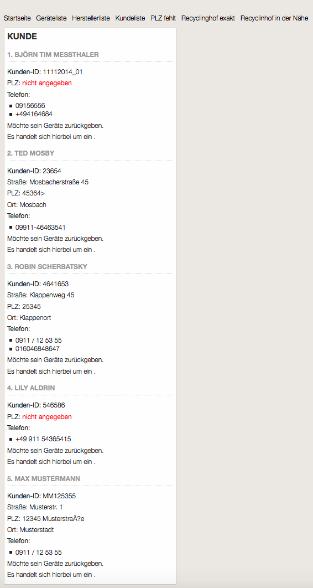
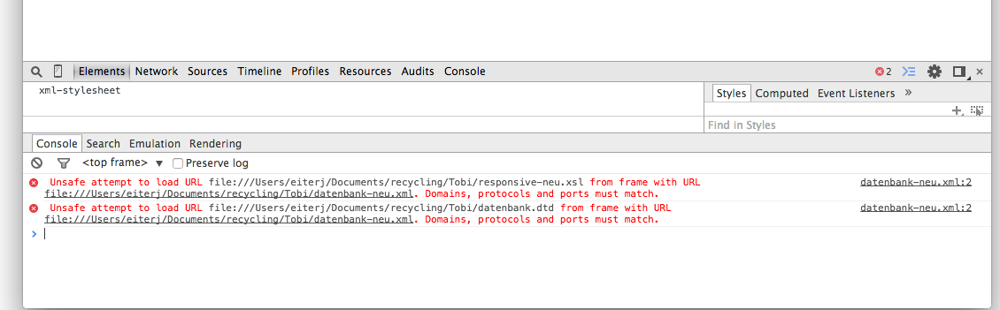

Diese Dokumentation handelt sich um die Projektarbeit für das Fach Datenmodellierung mit XML. Das Projekt realisiert eine technische Umsetzung einer Smartphone-Recycling Anwendung mit XML und XSLT.
Die Zuweisung der Projekte führte dazu, dass Josef Eiter, Tobias Linke und Jennifer Steinbinder das Thema "Recycling" zu bearbeiten hatten. Da aktuelle Diskussionen rund um das unnötige Aufbewahren alter Handys geführt werden, hat sich das Projekteam genau auf diese Situation spezialisiert. Das Handyrecycling wird mit Hilfe der Datenmodellierung mit XML zu einem ausführlichen Informationssystem abgebildet. Ziel ist es, einen Überblick über die Datensicht des Informationssystems "Handyrecycling" zu verschaffen.
Das Projektteam ist wie folgt strukturiert vorgegangen. Die Phasen der Datenmodellierung wurden gemeinsam erarbeitet. Mit Hilfe eines Geschäftsprozessmodells wurde ein konzeptuelles Schema entworfen. Das konzeptuelles Schema wurde in die logische bzw. relationale Strukturen des Modellierungswerkzeugs überführt. Analog zu den relationalen Strukturen wurden die dazugehörigen XML-Dokumente erstellt. Parallel wurden die Document Type Definitions zu jeder XML-Datei deklariert. Anschließend wurde der Umgang mit XPath-Ausdrücke sich angeeignet. Durch das nun verschaffte Know-How der XML Path Language und der Sprache XSLT Views erzeugt.
2 Geschäftsprozessmodell
Zur Darstellung des Vorgehens bei unserer Onlineanwendung "Handyrecycling.de" wurde ein EPK-Modell modelliert. Es beschreibt den Prozess des Handyrecycling-Projekts.
Der Kunde möchte sein Gerät recycling. Zuerst wird ihm eine Auswahl des Gerätetyps angezeigt: Smartphone, Tablet, Handy oder sonstige elektrische Geräte. Folglich muss er den Verschmutzungsgrad angeben. Dazu kann der Kunde unter folgenden Zuständen auswählen: gereinigt, akzeptabel und verschmutzt. Falls das Gerät verschmutzt ist, wird ihm eine kostenpflichtige Säuberung angeboten. Wird diese verneint, wird ihm in einer Anzeige mitgeteilt, dass sein Gerät leider nicht recycelt werden kann. Bei einem gesäuberten Gerät kann nun unser Recyclingprozess weitergeführt werden. Nun wird der Zustand des Geräts geprüft. Bei einem neuwertigen Gerät wird folgend der Hersteller des Geräts identifiziert. Angrenzend entscheidet der Kunde, ob er sein Gerät selbst an den Hersteller verschickt oder Handyrecycling.de kostenpflichtíg das Gerät an den Hersteller versendet. Ist jedoch das Gerät stark gebraucht, entscheidet der Kunde, ob er unseren Service, dass das Gerät von uns aus zum Recyclinghof versendet wird, in Anspruch nimmt oder selber das Gerät recyclen möchte. Entscheidet er sich für das Letztere wird ihm mit Hilfe seiner Adressdaten der näheste Recyclinghof angezeigt.
Abbildung 1: EPK Modell Geschäftsprozess
3 Datenmodell
Während der Entwicklung unseres Projekts wurde das Startdatenmodell aufgrund von Unstimmigkeiten und Unklarheiten erweitert und verändert.
3.1 Initiales Datenmodell

Abbildung 2: Initiales Datenmodell
3.2 Neues Datenmodell

Abbildung 3: Neues Datenmodell
4 Richtlininen zur Gestaltung der XML Dateien
Da gemeinsam an einem Projekt gearbeitet wird, macht es durchaus Sinn gewisse Konventionen für die Gestaltung des XML Codes und allgemeine Regeln festzulegen. Diese Regeln sollten auch bei Änderungen oder Erweiterungen eingehalten werden um die Konsistenz der Datenstruktur zu gewährleisten.
4.1 Elemente und Attribute
Die allgemeine Zeichenkodierung wurde über alle XML-Files hinweg wie folgt festgelegt:
<?xml version="1.0" encoding="ISO-8859-1"?>
Da unsere Anwendung nur in Deutschland verwendet werden soll und die Inhalte auf Deutsch sind, sollen die Elementnamen und Attribute auf Deutsch sein. Elementnamen und Attribute sind in der Regel klein zu schreiben.Bei allen XML-Dokumenten wurde ein genaues Wurzelelement ausgewählt. Das Informationssystem hat die Wurzel datenbank, in der alle vier Listen eingepflegt werden: geraeteListe, herstellerListe, kundenListe und recyclinghofListe. An diesem Beispiel werden zum Einen die Vorgabe, dass das Element mit einem kleinen Buchstaben beginnt und zum Anderen auf Deutsch gehalten wird, eingehalten. Jedes drauffolgende Wort in demselben Element beginnt mit einem großen Buchstaben: geraeteListe. Es wurden hier also folgende Regeln beachtet:
Namen dürfen Buchstaben, Ziffern und andere Zeichen enthalten
Namen dürfen Groß- und Kleinschreibung beinhalten
Namen sollten ausdrucksstark und kurz sein
Um den Inhalt mancher Elemente zu beschreiben wurden einerseits PCDATA und andererseits CDATA verwendet. Als Beispiel wird die herstellerListe betrachtet. Parsed Character Data (PCDATA) wurde bei Elementen angewendet, die einen unstrukturierten Inhalt haben. PCDATA sind Dokumentenabschnitte, die der XML-Parser gemäß den XML-Syntax-Regeln verarbeitet. Ein Beispiel für einen Inhalt des Elements oeffnungszeiten ist:
Unparsed Character Data (CDATA) wurde in Attributen verwendet. Der Term CDATA markiert Texte, die ein XML-Parser nicht verarbeiten soll. Ein Beispiel eines Attributs, das mit CDATA deklariert worden ist, ist das Attribut recyclinghof:
Hier ist der Inhalt der recyclinghofID von der Verarbeitung des XML-Pasers ausgeschlossen. Attribute beschreiben ein Element. Das Element recyclinghof wird hier also mit dem Attributnamen recyclinghofID und dem Attributwert HofMitte beschrieben. Ein Element kann auch beliebig viele Attribute tragen, somit ist die Entscheidung ziemlich schnell getroffen worden, dass beispielsweise das Element geraet mehrere Attribute hat, da ein Gerät mehrere Eigenschaften hat:
Das Gerätebeispiel hat also eine genaue ID, eine Bezeichnung, einen Zustand, einen Verschmutzungsgrad sowie eine dazugehörige Produktkategorie. Die Richtlinie, dass Attribute unterschiedliche Namen tragen müssen, wurde strengst beachtet. Die Reihenfolge zwischen den einzelnen Eigenschaften sind in einem Attribut völlig gleichgültig.
Durch das zusätzliche Einfügen von Elementen und Attributen können XML Dokumente leicht erweitert werden. Die Erweiterbarkeit von XML kann Missverständnisse in der Kommunikation unter den Projektmitgliedern auslösen, deswegen einigten sich die Teammitglieder darauf, dass falls ein Name eines Attributs oder Elements schon einmal vergeben worden ist, war dieser reserviert und durfte keinesfalls für eine andere Bedeutung verwendet werden.
Es wurden also folgende Punkt des Well-formed XML eingehalten:
Jedes Anfangs-Tag muss ein zugehöriges Ende-Tag haben
XML beachtet grundsätzlich Groß- und Kleinschreibung
XML beläst Whitespace im Text.
Ein Element darf niemals zwei Attribute mit dem selben Namen haben
4.2 Kommentare
Da Kommentare nicht innerhalb von XML-Tags verwendet werden dürfen, werden diese nach Möglichkeit über den betreffenden XML-Tag verfasst. Die Klammerung der Kommentare erfolgte durch standardgemäßter Form: . Außerdem wurde vorallem die Angabe befolgt, dass "--" Zeichen in keinem Kommentar verwendet wurden. Im Allgemeinen sollten die Kommentare beschreibend und aussagekräftig sein. Fehlgeschlagene Versuche wurden in den XML Dokumenten beibehalten aber mit Hilfe der Kommentagfunktion auskommentiert, damit sie keinen Einfluss auf die Validierung des XML Dokuments hat. Um die Document Type Definition zu beschreiben wurde auch innerhalb der DTD einige Kommentare erfasst.
5 Document Type Definition (DTD)
Document Type Definitions (DTDs) werden in einem seperaten Dokument ausgelagert um die Dateigröße der einzelnen XML-Dokumenten möglichst gering zu halten. Die DTD-Datei(en) werden in das XML Dokument ganz eingebunden. Eine Menge formal überprüfbarer Regeln zur Beschreibung der gemeinsamen strukturellen Merkmale einer Menge von Dokumenten ist ein Dokumententyp. Dementsprechend ist eine DTD eine Grammatik. Das Validieren der Document Typ Definition und der zugehörigen XML Dokumente erfolgte durch das Online-Tool von W3C http://validator.w3.org. Da mit verschiedenen Editoren wie Notepad++, TextEdit gearbeitet worden ist, wurde entschlossen, dass nach jeder Änderung das File mit dem W3C Validator validiert wird. Die DTD wurde extern lokal im System deklariert:
<!DOCTYPE datenbank SYSTEM "datenbank.dtd">
Elemente werden in der DTD wie folgt definiert:
XML
DTD
<geraet>
<!ELEMENT geraet>
Die Reihenfolge von Elementen in einem Dokument ist in der DTD fest deklariert:
Diese Ausdrücke über das Element adresse zeigt folgendes: Jede Adresse hat mindestens einen Namen. Die Straße, Postleitzahl sowie der Ort sind optional anzugeben. Jedoch muss mindestens eine Telefonnummer des Kundens angegeben werden. Der Kunde sollte bei Rückfragen oder Notfällen unter einer Telefonnummer erreichbar sein.
Ein Attribut wurd in der DTD wie folgt deklariert:
<!ATTLIST geraet geraetID NMTOKEN #REQUIRED>
Die DTD beschreibt hier, welche Attribute und Attributwerte in einem XML-Dokument in welchen Elementen vorkommen dürfen. Das Attribut geraetID wurde außerhalb des betroffenen Elements (hier:geraet) durch ATTLIST deklariert.
Hier haben wir ein Attribut, das durch NMTOKEN beschrieben wird. Das heißt es sind bei einem NMTOKEN Namen mit führenden Ziffern und Satzzeichen am Anfang erlaubt. Der Default-Wert #REQUIRED besagt, dass das XML-Dokument an dieser Stelle einen Wert spezifizieren muss.
In der XML-Datei selbst werden die Kindelemente des übergeordneten Elements um einen Tab eingerückt um die Lesbarkeit der XML-Dokumente zu erhöhen.
Verknüpfungen zwischen Elementen durch Attribute mit den Attributstypen wie ID, IDREF, IDREFS wurden in dem Projekt Eiter, Steinbinder und Linke nicht verwendet.
Im Rahmen dieses Projekts wurden keine Entities (Abkürzungen für Zeichenfolgen) verwendet.
5.1 Gerät
Für unseren Anwendungsfall müssen zu den Geräten verschiedene Informationen gespeichert werden.
Ist ein Container für alle Geräte die in unserer Datenbank vorhanden sind. Mit diesem Container ist es möglich eine Liste der Geräte auszugeben.
geraet
Beschreibt ein bestimmtes Gerät. Es beinhaltet alle relevanten Information zu diesem Gerät.
Attribute geraet:
Attribut
Beschreibung
bestandteile+
Ein Gerät besteht aus mehreren Bestandteilen (mindestens einem Bestandteil). Bestandteile können zum Beispiel Glas, Kunstoff oder Kupfer sein. Diese Information ist für den Recyclingvorgang relevant.
geraetID
Ist ein eindeutiger Bezeichner für ein Gerät.
gereatBezeichnung
Bezeichnung ein bestimmtes Geräts. Beispiel: Samsung Galaxy S3
zustand
Beschreibt den Zustand eines Geräts. Der Zustand kann neuwertig, gut oder defekt sein.
verschmutzungsgrad
Beschreibt den Verschmutzungsgrad eines vom Kunden gebrachtem Geräts. Ist das Gerät sehr stark verschmutzt wird es ggf. nicht angenommen. Es können gereinigt, akzeptabel oder verschmutzt angegben werden.
geraetekategorie
Beschreibt ein bestimmtes Gerät. Es beinhaltet alle relevanten Information zu diesem Gerät.
5.2 Hersteller
Alle Geräte besitzen einen Hersteller. Die Hersteller werden in der Datenbank mit Adresse gespeichert, da es sein kann, dass ein Gerät beim Hersteller recycelt werden kann.
Ist ein Container für alle Hersteller die in unserer Datenbank vorhanden sind. Mit diesem Container ist es möglich eine Liste der Hersteller auszugeben.
hersteller
Beschreibt ein bestimmtes Gerät. Es beinhaltet alle relevanten Information zu diesem Gerät.
Attribute hersteller:
Attribut
Beschreibung
adresse+
Adresse des Herstellers. Er kann mehere Adressen haben. Es muss aber mindestens eine Adresse angegeben werden.
herstellerID
Ist ein eindeutiger Bezeichner für einen Hersteller.
5.3 Kunde
Für unseren Anwendungsfall müssen zu den Geräten verschiedene Informationen gespeichert werden.
Die DTD für Kunde sieht wie folgt aus:
<!ELEMENT kundenListe (kunde*)>
<!ELEMENT kunde (adresse?)>
<!ATTLIST kunde kundenID CDATA #REQUIRED>
Elemente:
Element
Beschreibung
kundenListe
Ist ein Container für alle Kunden die in unserer Datenbank vorhanden sind. Mit diesem Container ist es möglich eine Liste der empfangenen Kunden auszugeben.
kunde
Beschreibt einen bestimmten Kunden. Es beinhaltet alle relevanten Information zu diesem Kunden.
Attribute kunde:
Attribut
Beschreibung
kundenID
Jeder Kunde hat eine eindeutige ID, mit der er identifiziert werden kann.
geraet
Ist ein bestimmtes Gerät zu dem zugehörigen Kunden. Es bestimmt den Gerätetyp.
geraetekategorie
Beschreibt ein bestimmtes Gerät. Es beinhaltet alle relevanten Information zu diesem Gerät.
5.4 Recyclinghof
Für unseren Anwendungsfall müssen zu den Geräten verschiedene Informationen gespeichert werden.
Ist ein Container für alle Geräte die in unserer Datenbank vorhanden sind. Mit diesem Container ist es möglich eine Liste der Geräte auszugeben.
geraet
Beschreibt ein bestimmtes Gerät. Es beinhaltet alle relevanten Information zu diesem Gerät.
Attribute recyclinghof:
Attribut
Beschreibung
bestandteile+
Ein Gerät besteht aus mehreren Bestandteilen (mindestens einem Bestandteil). Bestandteile können zum Beispiel Glas, Kunstoff oder Kupfer sein. Diese Information ist für den Recyclingvorgang relevant.
geraetID
Ist ein eindeutiger Bezeichner für ein Gerät.
gereatBezeichnung
Bezeichnung ein bestimmtes Geräts. Beispiel: Samsung Galaxy S3
zustand
Beschreibt den Zustand eines Geräts. Der Zustand kann neuwertig, gut oder defekt sein.
verschmutzungsgrad
Beschreibt den Verschmutzungsgrad eines vom Kunden gebrachtem Geräts. Ist das Gerät sehr stark verschmutzt wird es ggf. nicht angenommen. Es können gereinigt, akzeptabel oder verschmutzt angegben werden.
geraetekategorie
Beschreibt ein bestimmtes Gerät. Es beinhaltet alle relevanten Information zu diesem Gerät.
5.5 Weitere Definitionen
6 Entwicklung XML-Schemata
Bei der Entwicklung des XML-Schematas wurden folgende Anforderungen bearbeitet und erfüllt:
Flexibilität: Unser Schema wird für eine Klasse von Dokumenten entworfen
Zukunftssicherheit: Unser Schema sollte durch seine Struktur zukünftige Ergänzungen und Erweiterungen leicht machen
Komplexität: Gekoppelt mit Pflegeaufwand und Akzeptanz durch Benutzer
Folgende Phasen der Document-Type-Defintion-Entwicklung wurden abgeschlossen:
Die Vorbereitung: Unser Schema wurde vorerst auf Nutzbarkeit, Validierbarkeit und Komplexität geprüft.
Das Konzeptionelle Schema: Es wurde analysiert welche Daten benötigt werden. Um das perfekte Ergebnis zu erreichen, hat sich das Team erst einmal den zu bearbeiteten Geschäftsprozess genauestens betrachtet. Welche Fakten werden benötigt? Können diese gruppiert werden? Gibt es bereits Modelle, auf die man zurückgreifen kann? Das Team hat sich stark an den üblichen Recyclingprozess von alltäglichen Geräten orientiert.
Das Logische Schema: Mit Hilfe eines Datenmodells wurden Anforderungen an das Schema entwickelt. Aus dem Datenmodell konnte nun beispielsweise gelesen werden: welche Datenstrukturen werden nun benötigt? Haben wir obligatorische beziehungsweise fakultative Daten? Welche Strukturen müssen in einer festen Reihenfolge auftreten? Welche Daten gehören in den Inhalt der Elemente und welche zu den Eigenschaften?
Das Physische Schema: Nun erfolgte die reine Implementierung. Welche Daten werden als Elemente, Attribute,... deklariert?
Die Nachbereitung und das Testen: Prüfung des Schemas auf Basis bereits vorliegender Dokumente. Enige Aspekte mussten geändert werden. Fehler oder Unklarheiten mussten bereinigt werden. Das Zurückspringen zu einer vorherigen Phasen war durchaus auch Teil des Projekts.
6.1 Aufbau und Struktur der XML Dateien
6.2 Validierung
Für die Validierung der XML-Struktur wurde das Commandline-Tool xmllint verwendet. Der Aufbau der entsprechenden XML Datei wird mit ihrer Document Type Definition abgeglichen und so überprüft ob die Inhalte der Grammatik entsprechen. Dies ist wichtig, um die Datenstuktur zu testen und etwaige Fehler und Schwächen des Datenmodells zu erkennen und auszuschließen.
Das Commandline-Tool xmllint wird wie folgt verwendet:
xmllint -valid <Pfad zur XML Datei>
Wenn Fehler auftreten gibt das Programm diese aus. Bei einer erfolgreichen Validierung wird die XML Datei ohne Formatierung ausgegeben. Falls es Warnungen gibt, gibt das Programm diese vor dem Inhalt der zu prüfenden XML Datei aus.
Beispiel für einen "parser error":
datenbank.xml:11: parser error : internal error: xmlParseInternalSubset: error detected in Markup declaration
&produktListe;
^
datenbank.xml:11: parser error : DOCTYPE improperly terminated
&produktListe;
^
datenbank.xml:11: parser error : Start tag expected, '<' not found
&produktListe;
^
6.3 Testfälle
Um die XML Struktur auf Fehler und Schwachstellen zu Testen wurden Testfälle entworfen. Für die Tests wurden XML-Dateien mit fiktiven aber theoretisch möglichen Testdaten erstellt. Diese Test-Dateien wurden validiert und das Ergebnis ausgewertet.
Kriterien für die Tests waren:
Testdaten werden so entworfen, wie sie auch in einer realen Anwendung vorkommen können.
Die Ergebnisse der Tests müssen gründlich Dokumentiert werden.
Es muss die Ursache der Fehler sowie die Lösung dieser Dokumentiert werden.
Fehler, die sich aufgrund von Schwächen von XML nicht beheben lassen müssen detailliert beschrieben werden und es muss ein Workaround dazu gefunden werden.
Folgende Testfälle wurden durchgeführt:
1. KundenListe
Beschreibung:
Das Einsetzen von Sonderzeichen in die KundenID wurde geprüft.
Ergebnis
<kunde kundenID ="11112014_01"></kunde>
Validierer hatte nichts zu meckern.
Beschreibung:
Verschiedenste Arten von Namen wurde in dem Adressblock ausprobiert. Doppelnamen, sowie Namen mit Sonderzeichen wie ö,ä und ü. Folgende Kunden wurden angelegt:
Elemente wie Telefon wurden mehr als einmal angelegt und der Inhalt des Elements Telefon wurde in unterschiedlichen Formationen implementiert, da es doch im alltäglichen Leben üblich ist, dass ein Kunde mehr als eine Telefonnummer besitzt (meist ist dies eine Festnetznummer und eine zusätzliche Mobiltelefonnummer).
Das Element Adresse wurde beim Testen der KundenListe etwas geändert. Da es durchaus möglich sein könnte, dass ein Kunde uns seine Wohnadresse nicht angeben möchte, muss es hier möglich sein dies zu unterstützen. Zusätzlich aber muss beachtet werden, dass mindestens ein Name, sowie eine Telefonnummer anzugeben ist, da bei Rückfragen es möglich sein muss den Kunden zu kontaktieren.
Das Element Öffnungszeiten wurde ebenfalls noch einmal überarbeitet und geändert, um XPath Abfragen beziehungsweise der Umgang mit den Views für einzelne Öffnungszeiten an einem bestimmten Tag zu vereinfachen.
Ergebnis
Vorher
Nachher
<oeffnungszeiten>Mo, Di, Mi, Do, Fr und Sa 9.30 Uhr - 18 Uhr
</oeffnungszeiten>
<oeffnungszeiten>Sonntag und an Feiertagen geschlossen</oeffnungszeiten>
<oeffnungszeiten>Sonntag und Feiertag geschlossen</oeffnungszeiten>
2.
Beschreibung
Ergebnis
3.
Beschreibung
Ergebnis
4.
Beschreibung
Ergebnis
5.
Beschreibung
Ergebnis
7 XML Path Language
XPath ist eine vom W3C-Konsortium entwickelte Anfragesprache um Teile von XML-Dokumenten zu adressieren und auszuwerten (Angelehnt an Wikipedia, abgerufen am 01.01.2015). Sie arbeitet auf dem DOM eines Xml-Dokuments und ermöglicht eine Navigation,eine Wahl von Knotenmengen und Auswertungsoperationen.
7.1 Einarbeitung
Mit Hilfe von XPath-Ausrücken können Teilmengen eines XML-Dokuments bestimmt werden. Dadurch werden Asdrücke evaluiert und das Ergebnis der Evaluierung ist ein Wert mit Typ node-set, string, boolean oder number. Um eine Knotenmenge zu spezifizieren, gibt man einen Weg von einem anderen Knoten aus an( meistens der Wurzel). Sie sind untergliedert in mit "/" getrennte Schritte. Ein Schritt setzt sich zusammen aus:
Achse: :Knotentest[Prädikat]
Um sich etwas in die XML Path Language einzuarbeiten, wurde mit Hilfe des Notepade++ XML Tool "XPath Expression Evaluation" einige Abfragen durchgeführt.
Bespiele:
Mit Hilfe des XPath-Ausdrucks: /datenbank/geraeteListe/child::* konnten alle bisher abgegeben Geräte angezeigt werden.
Abbildung 4: Liste der bisher abgegebenen Geräte
Mit Hilfe des XPath-Ausdrucks: /kundenListe/child::*/adresse/plz konnten alle Postleitzahlen unserer Kunden angegeben werden.

Abbildung 5: Liste der Postleitzahlen unserer Kunden
Mit Hilfe des XPath-Ausdrucks: /datenbank/recyclinghofListe/recyclinghof[@=recyclinghofID="HofNord"]/oeffnungszeiten konnten die Öffnungszeiten des Recyclinghofs Nord angezeigt werden.
Abbildung 6: Anzeige der Öffnungszeiten des Recyclinghofs Nord
8 Entwicklung der Views mit XSLT
Um die Daten aus unserer XML-Datenstruktur benutzerfreundlich zu repräsentieren wurden Ansichten (Views) mit XSLT (Extensible Stylesheet Language Transformations) entwickelt. Mit XSLT ist es möglich mit einfachen Mitteln Daten aus einer oder mehreren XML-Dateien in einem Browser formatiert darzustellen.
Bei der Entwicklung wurde darauf geachtet, dass die Darstellung auf mobilen Geräten sowie Desktop PCs gut leserlich und passend ist.
Im Rahmen unseres Projekts wurden mehrere verschiedene Views erstellt, die unsere Daten darstellen. Diese Ansichten werden in den folgenden Abschnitten beschrieben.
8.1 Vorbereitung
8.1.1 CSS
Um ein möglichst übersichtliches XSL-Dokument zu erhalten haben wir so gut wie alle Styles in ein externes CSS-Dokument ausgelagert
Zur leichteren Verarbeitung der Datenbank haben wir Variablen für einzelnen Listen in der XSL-Datei angelegt. Im späteren Verlauf werden weitere Variablen angelegt
8.2.3 Codefragment zur Berechnung in der XML-Datei
<p>
<strong>Recyclinggrad: <xsl:value-of select="format-number(sum(bestandteile/bestandteil/@recyclinggrad)
div count(bestandteile/bestandteil), '###,###,##0.00')"/> %</strong>
</p>

Abbildung 7: Geräteliste
8.3 Herstellerübersicht

Abbildung 8: Herstellerliste
8.4 Kundenliste
8.4.1 Herausfiltern von nicht vorhandenen Daten
Dadurch das wir in unserer XML-Datei für Kunden nur eine Telefonnummer und den Namen voraussetzen,
bleiben manche Felder unausgefüllt diese werden über bestimmte Anweisungen und Abfragen nicht in dem View angezeigt.
Anwendungsfall: Kunde kommt und möchte sein Gerät zurückgeben
Der Kunde kommt zu uns und möchte sein Gerät recycling lassen. Er möchte gerne wissen welcher Recyclinghof in seiner Nähe sein Gerät zurücknimmt
Leider hat er bei seiner Registrierung seine Postleitzahl vergessen einzugeben, um jedoch einen Recyclinghof in seiner näheren Umgebung zu finden is die Postleitzahl zwingend notwendig.
Unser System liefert einen Fehler und bittet die Postleitzahl nachzuliefern.
Anlegen einer neuen Variablen
Unser imaginäre Kunde Lily wird in der Variable "lily" gespeichert um eine leichtere Verarbeitung zu gewährleisten.
Nachdem die Postleitzahl eingefügt wurde, können wir nun anhand der PLZ ermitteln welcher Recyclinghof sich in der Nähe des Kunde befindet.
Probleme
Leider lassen sich in XSLT 1.0 nicht ohne Aufwand zwei Zahlen vergleichen
Work-Around
8.7 Probleme und Herausforderungen bei der Entwicklung der Views

Abbildung 11: Fehler beim Chrome Browser
8 Mögliche Erweiterungen und Einsatzgebiete
9 Fazit
A References
A.1 Normative References
RFC 3023
RFC 3023: XML Media Types. Makoto, M., St. Laurent, S. and D. Kohn, editors. Internet Engineering Task Force, 2001. (See http://www.ietf.org/rfc/rfc3023.txt.)
XML Base (Second Edition). Jonathan Marsh and Richard Tobin, editors. World Wide Web Consortium, 2009. (See http://www.w3.org/TR/xmlbase/.)
XML Names
Namespaces in XML 1.0 (Third Edition). Tim Bray, Dave Hollander, Andrew Layman, et. al. editors. World Wide Web Consortium, 2009. (See http://www.w3.org/TR/REC-xml-names/.)
XPointer Framework
XPointer Framework Grosso, Paul, Eve Maler, Jonathan Marsh, and Norman Walsh, editors. World Wide Web Consortium, 2003. (See http://www.w3.org/TR/xptr-framework/.)
XPointer element() Scheme
XPointer element() Scheme Grosso, Paul, Eve Maler, Jonathan Marsh, and Norman Walsh, editors. World Wide Web Consortium, 2003. (See http://www.w3.org/TR/xptr-element/.)
Extending XLink 1.0, Norman Walsh, Editor. World Wide Web Consortium, 27 Jan 2005. (See http://www.w3.org/TR/xlink10-ext.)
XML Linking Language (XLink) Version 1.0
XML Linking Language (XLink) Version 1.0, Steven DeRose, David Orchard, and Eve Maler, Editors. World Wide Web Consortium, 27 Jun 2001. (See http://www.w3.org/TR/xlink/.)
Dexter
"The Dexter Hypertext Reference Model." Halasz, Frank. 1994. In Communications of the Association for Computing Machinery 37 (2), February 1994: 30-39.
FRESS
Steven J. DeRose and Andries van Dam. 1999. "Document structure in the FRESS Hypertext System." Markup Languages 1 (1) Winter. Cambridge: MIT Press: 7-32.
HTML
HTML 4.01 Specification. World Wide Web Consortium, 1999. (See http://www.w3.org/TR/1999/REC-html401-19991224/.)
Intermedia
"Intermedia: The Concept and the Construction of a Seamless Information Environment." Yankelovich, Nicole, Bernard J. Haan, Norman K. Meyrowitz, and Steven M. Drucker. 1988. IEEE Computer 21 (January, 1988): 81-96.
Rethinking Hypermedia: The Microcosm Approach. Hall, Wendy, Hugh Davis, and Gerard Hutchings. 1996. Boston: Kluwer Academic Publishers. ISBN 0-7923-9679-0.
OHS
"The Role of XML in Open Hypermedia Systems." van Ossenbruggen, Jacco, Anton Eliëns and Lloyd Rutledge. Position paper for the 4th Workshop on Open Hypermedia Systems, ACM Hypertext '98.
RDF
RDF Primer. Manola, Frank and Eric Miller, editors. World Wide Web Consortium, 2004. (See http://www.w3.org/TR/rdf-primer/.)
TEI
Guidelines for Electronic Text Encoding and Interchange. C. M. Sperberg-McQueen and Lou Burnard, editors. Association for Computers and the Humanities (ACH), Association for Computational Linguistics (ACL), and Association for Literary and Linguistic Computing (ALLC). Chicago, Oxford: Text Encoding Initiative, 1994.
XIS
XML Information Set. John Cowan and Richard Tobin, editors. World Wide Web Consortium, 2004. (See http://www.w3.org/TR/xml-infoset/.)
XML XLink Requirements Version 1.0. Steven DeRose, editor. World Wide Web Consortium, 1999. (See http://www.w3.org/TR/1999/NOTE-xlink-req-19990224/.)
XPTR
XML Pointer Language (XPointer). Ron Daniel, Steve DeRose, Eve Maler, et. al. editors. World Wide Web Consortium, 2002. (See http://www.w3.org/TR/xptr/.)
XML Schema Part 1: Structures
XML Schema Part 1: Structures. David Beech, Noah Mendelsohn, Murray Maloney, and Henry S. Thompson, Editors. World Wide Web Consortium, 2004.
Ruby Annotation. Michel Suignard, Tex Texin, Marcin Sawicki, et. al., Editors. World Wide Web Consortium, 2001. (See http://www.w3.org/TR/ruby/.)
B Sample DTD (Non-Normative)
The following DTD makes invalid (for purposes of argument) all XLink constructs for which this specification does not specify behavior. It is provided only as a convenience for application developers; it has no normative status.
The following assumptions hold for this DTD:
Only constructs that have XLink-defined meaning are allowed.
No "foreign" vocabularies are mixed in, since DTDs do not work well with namespaces.
The use of ANY means there is typically content provided in the element that is used by XLink in some way.
The use of the (title*) construct means that any non-title content provided has no XLink-defined use.
Elements are named after the XLink element types they represent.
Other assumptions and conditions appear as comments in the DTD.
<!ENTITY % showActuate
"xlink:show (new
|replace
|embed
|other
|none) #IMPLIED
xlink:actuate (onLoad
|onRequest
|other
|none) #IMPLIED">
<!ENTITY % simpleAttrs
'xlink:type (simple) "simple"
xlink:href CDATA #IMPLIED
xlink:role CDATA #IMPLIED
xlink:arcrole CDATA #IMPLIED
xlink:title CDATA #IMPLIED
%showActuate;'>
<!ELEMENT simple ANY>
<!ATTLIST simple
xmlns:xlink CDATA #FIXED "http://www.w3.org/1999/xlink"
%simpleAttrs;>
<!ENTITY % extendedContent.extras "">
<!ENTITY % extendedModel
"(title|resource|locator|arc %extendedContent.extras;)*">
<!ENTITY % extendedAttrs
'xlink:type (extended) #FIXED "extended"
xlink:role CDATA #IMPLIED
xlink:title CDATA #IMPLIED'>
<!ELEMENT extended (%extendedModel;)>
<!ATTLIST extended
xmlns:xlink CDATA #FIXED "http://www.w3.org/1999/xlink"
%extendedAttrs;>
<!ENTITY % titleAttrs
'xlink:type (title) #FIXED "title"
xml:lang CDATA #IMPLIED'>
<!ELEMENT title ANY>
<!-- xml:lang is not required, but provides much of the motivation
for title elements in addition to attributes, and so is provided
here for convenience -->
<!ATTLIST title
%titleAttrs;>
<!ENTITY % resourceAttrs
'xlink:type (resource) #FIXED "resource"
xlink:role CDATA #IMPLIED
xlink:title CDATA #IMPLIED
xlink:label NMTOKEN #IMPLIED'>
<!ELEMENT resource ANY>
<!ATTLIST resource
%resourceAttrs;>
<!ENTITY % locatorAttrs
'xlink:type (locator) #FIXED "locator"
xlink:href CDATA #REQUIRED
xlink:role CDATA #IMPLIED
xlink:title CDATA #IMPLIED
xlink:label NMTOKEN #IMPLIED'>
<!ELEMENT locator (title*)>
<!-- label is not required, but locators have no particular XLink
function if they are not labeled -->
<!ATTLIST locator
%locatorAttrs;>
<!ENTITY % arcAttrs
'xlink:type (arc) #FIXED "arc"
xlink:arcrole CDATA #IMPLIED
xlink:title CDATA #IMPLIED
xlink:from NMTOKEN #IMPLIED
xlink:to NMTOKEN #IMPLIED
%showActuate;'>
<!ELEMENT arc (title*)>
<!-- from and to have default behavior when values are missing -->
<!ATTLIST arc
%arcAttrs;>
C Sample XML Schema (Non-Normative)
The following XML Schema document, per [XML Schema Part 1: Structures], provides XLink-1.1-specific declarations and definitions for use in defining linking elements which conform to this specification.
A permanent copy of this schema document is available at http://www.w3.org/XML/2008/06/xlink.xsd. Another copy is available at http://www.w3.org/1999/xlink.xsd. At the time of publication these two copies are identical, but the version at .../1999/xlink.xsd may change in the future to reflect subsequent editions or versions of XLink or of XML Schema.
<?xml version='1.0' encoding='UTF-8'?>
<xs:schema xmlns:xs="http://www.w3.org/2001/XMLSchema" targetNamespace="http://www.w3.org/1999/xlink" xmlns:xlink="http://www.w3.org/1999/xlink">
<xs:annotation>
<xs:documentation>This schema document provides attribute declarations and
attribute group, complex type and simple type definitions which can be used in
the construction of user schemas to define the structure of particular linking
constructs, e.g.
<![CDATA[
<xs:schema xmlns:xs="http://www.w3.org/2001/XMLSchema"
xmlns:xl="http://www.w3.org/1999/xlink">
<xs:import namespace="http://www.w3.org/1999/xlink"
location="http://www.w3.org/1999/xlink.xsd">
<xs:element name="mySimple">
<xs:complexType>
...
<xs:attributeGroup ref="xl:simpleAttrs"/>
...
</xs:complexType>
</xs:element>
...
</xs:schema>]]></xs:documentation>
</xs:annotation>
<xs:import namespace="http://www.w3.org/XML/1998/namespace" schemaLocation="http://www.w3.org/2001/xml.xsd"/>
<xs:attribute name="type" type="xlink:typeType"/>
<xs:simpleType name="typeType">
<xs:restriction base="xs:token">
<xs:enumeration value="simple"/>
<xs:enumeration value="extended"/>
<xs:enumeration value="title"/>
<xs:enumeration value="resource"/>
<xs:enumeration value="locator"/>
<xs:enumeration value="arc"/>
</xs:restriction>
</xs:simpleType>
<xs:attribute name="href" type="xlink:hrefType"/>
<xs:simpleType name="hrefType">
<xs:restriction base="xs:anyURI"/>
</xs:simpleType>
<xs:attribute name="role" type="xlink:roleType"/>
<xs:simpleType name="roleType">
<xs:restriction base="xs:anyURI">
<xs:minLength value="1"/>
</xs:restriction>
</xs:simpleType>
<xs:attribute name="arcrole" type="xlink:arcroleType"/>
<xs:simpleType name="arcroleType">
<xs:restriction base="xs:anyURI">
<xs:minLength value="1"/>
</xs:restriction>
</xs:simpleType>
<xs:attribute name="title" type="xlink:titleAttrType"/>
<xs:simpleType name="titleAttrType">
<xs:restriction base="xs:string"/>
</xs:simpleType>
<xs:attribute name="show" type="xlink:showType"/>
<xs:simpleType name="showType">
<xs:restriction base="xs:token">
<xs:enumeration value="new"/>
<xs:enumeration value="replace"/>
<xs:enumeration value="embed"/>
<xs:enumeration value="other"/>
<xs:enumeration value="none"/>
</xs:restriction>
</xs:simpleType>
<xs:attribute name="actuate" type="xlink:actuateType"/>
<xs:simpleType name="actuateType">
<xs:restriction base="xs:token">
<xs:enumeration value="onLoad"/>
<xs:enumeration value="onRequest"/>
<xs:enumeration value="other"/>
<xs:enumeration value="none"/>
</xs:restriction>
</xs:simpleType>
<xs:attribute name="label" type="xlink:labelType"/>
<xs:simpleType name="labelType">
<xs:restriction base="xs:NCName"/>
</xs:simpleType>
<xs:attribute name="from" type="xlink:fromType"/>
<xs:simpleType name="fromType">
<xs:restriction base="xs:NCName"/>
</xs:simpleType>
<xs:attribute name="to" type="xlink:toType"/>
<xs:simpleType name="toType">
<xs:restriction base="xs:NCName"/>
</xs:simpleType>
<xs:attributeGroup name="simpleAttrs">
<xs:attribute ref="xlink:type" fixed="simple"/>
<xs:attribute ref="xlink:href"/>
<xs:attribute ref="xlink:role"/>
<xs:attribute ref="xlink:arcrole"/>
<xs:attribute ref="xlink:title"/>
<xs:attribute ref="xlink:show"/>
<xs:attribute ref="xlink:actuate"/>
</xs:attributeGroup>
<xs:group name="simpleModel">
<xs:sequence>
<xs:any processContents="lax" minOccurs="0" maxOccurs="unbounded"/>
</xs:sequence>
</xs:group>
<xs:complexType mixed="true" name="simple">
<xs:annotation>
<xs:documentation>
Intended for use as the type of user-declared elements to make them
simple links.
</xs:documentation>
</xs:annotation>
<xs:group ref="xlink:simpleModel"/>
<xs:attributeGroup ref="xlink:simpleAttrs"/>
</xs:complexType>
<xs:attributeGroup name="extendedAttrs">
<xs:attribute ref="xlink:type" fixed="extended" use="required"/>
<xs:attribute ref="xlink:role"/>
<xs:attribute ref="xlink:title"/>
</xs:attributeGroup>
<xs:group name="extendedModel">
<xs:choice>
<xs:element ref="xlink:title"/>
<xs:element ref="xlink:resource"/>
<xs:element ref="xlink:locator"/>
<xs:element ref="xlink:arc"/>
</xs:choice>
</xs:group>
<xs:complexType name="extended">
<xs:annotation>
<xs:documentation>
Intended for use as the type of user-declared elements to make them
extended links.
Note that the elements referenced in the content model are all abstract.
The intention is that by simply declaring elements with these as their
substitutionGroup, all the right things will happen.
</xs:documentation>
</xs:annotation>
<xs:group ref="xlink:extendedModel" minOccurs="0" maxOccurs="unbounded"/>
<xs:attributeGroup ref="xlink:extendedAttrs"/>
</xs:complexType>
<xs:element name="title" type="xlink:titleEltType" abstract="true"/>
<xs:attributeGroup name="titleAttrs">
<xs:attribute ref="xlink:type" fixed="title" use="required"/>
<xs:attribute ref="xml:lang">
<xs:annotation>
<xs:documentation>
xml:lang is not required, but provides much of the
motivation for title elements in addition to attributes, and so
is provided here for convenience.
</xs:documentation>
</xs:annotation>
</xs:attribute>
</xs:attributeGroup>
<xs:group name="titleModel">
<xs:sequence>
<xs:any processContents="lax" minOccurs="0" maxOccurs="unbounded"/>
</xs:sequence>
</xs:group>
<xs:complexType mixed="true" name="titleEltType">
<xs:group ref="xlink:titleModel"/>
<xs:attributeGroup ref="xlink:titleAttrs"/>
</xs:complexType>
<xs:element name="resource" type="xlink:resourceType" abstract="true"/>
<xs:attributeGroup name="resourceAttrs">
<xs:attribute ref="xlink:type" fixed="resource" use="required"/>
<xs:attribute ref="xlink:role"/>
<xs:attribute ref="xlink:title"/>
<xs:attribute ref="xlink:label"/>
</xs:attributeGroup>
<xs:group name="resourceModel">
<xs:sequence>
<xs:any processContents="lax" minOccurs="0" maxOccurs="unbounded"/>
</xs:sequence>
</xs:group>
<xs:complexType mixed="true" name="resourceType">
<xs:group ref="xlink:resourceModel"/>
<xs:attributeGroup ref="xlink:resourceAttrs"/>
</xs:complexType>
<xs:element name="locator" type="xlink:locatorType" abstract="true"/>
<xs:attributeGroup name="locatorAttrs">
<xs:attribute ref="xlink:type" fixed="locator" use="required"/>
<xs:attribute ref="xlink:href" use="required"/>
<xs:attribute ref="xlink:role"/>
<xs:attribute ref="xlink:title"/>
<xs:attribute ref="xlink:label">
<xs:annotation>
<xs:documentation>
label is not required, but locators have no particular
XLink function if they are not labeled.
</xs:documentation>
</xs:annotation>
</xs:attribute>
</xs:attributeGroup>
<xs:group name="locatorModel">
<xs:sequence>
<xs:element ref="xlink:title" minOccurs="0" maxOccurs="unbounded"/>
</xs:sequence>
</xs:group>
<xs:complexType name="locatorType">
<xs:group ref="xlink:locatorModel"/>
<xs:attributeGroup ref="xlink:locatorAttrs"/>
</xs:complexType>
<xs:element name="arc" type="xlink:arcType" abstract="true"/>
<xs:attributeGroup name="arcAttrs">
<xs:attribute ref="xlink:type" fixed="arc" use="required"/>
<xs:attribute ref="xlink:arcrole"/>
<xs:attribute ref="xlink:title"/>
<xs:attribute ref="xlink:show"/>
<xs:attribute ref="xlink:actuate"/>
<xs:attribute ref="xlink:from"/>
<xs:attribute ref="xlink:to">
<xs:annotation>
<xs:documentation>
from and to have default behavior when values are missing
</xs:documentation>
</xs:annotation>
</xs:attribute>
</xs:attributeGroup>
<xs:group name="arcModel">
<xs:sequence>
<xs:element ref="xlink:title" minOccurs="0" maxOccurs="unbounded"/>
</xs:sequence>
</xs:group>
<xs:complexType name="arcType">
<xs:group ref="xlink:arcModel"/>
<xs:attributeGroup ref="xlink:arcAttrs"/>
</xs:complexType>
</xs:schema>
Note: The Working Group acknowledges the work of the XBRL Consortium in producing a W3C XML Schema for XLink 1.0, which was useful input into the design of the schema document for XLink 1.1.
D Sample RELAX NG Grammar (Non-Normative)
The following [RELAX NG] Grammars (expressed in the compact syntax) validate XLink 1.1. They are provided only as a convenience for application developers; they have no normative status.
This specification implements the changes described in [Extending XLink 1.0]. These changes make XLink more useful in the places where it is already being used and make it practical in a variety of similar vocabularies. It differs from [XML Linking Language (XLink) Version 1.0] in the following ways:
The xlink:type attribute is no longer required for simple links. In the absence of any xlink:type attribute, an XLink is treated as a simple link.
Where [XML Linking Language (XLink) Version 1.0] referred to URIs, this specification refers to IRIs. This allows a broader range of values for for those properties that are identified with a resource identifier.
This specification includes non-normative sample XML Schema and RELAX NG grammars to complement the existing, non-normative sample DTD.
In addition, a few editorial changes have also been made.
Some bibliographic references have been updated to point to more recent specifications.
The conformance language has been rewritten to support a new, simple conformance level for applications that only expect to process simple links.
Several of the examples have been changed to highlight the presence of non-normative grammars other than the DTD.
The text describing the interpretation of the locator attribute (xlink:href) has been moved into a separate specification ([Legacy extended IRIs]) so that it may more easily be reused. The locator attribute is now described with reference to that specification.
Window size: 1920 x 1080 Viewport size: 1920 x 964